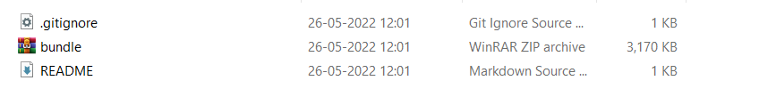
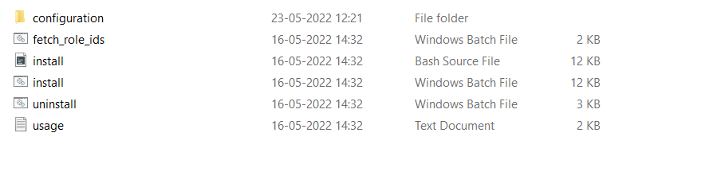
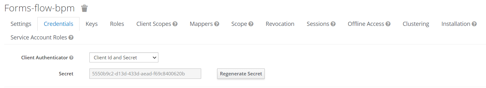
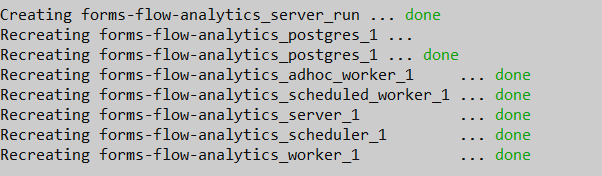
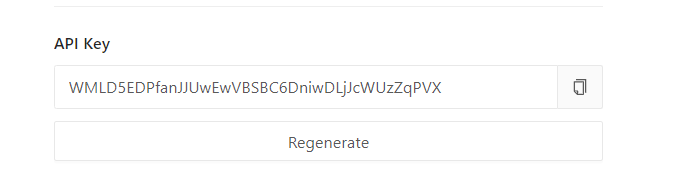
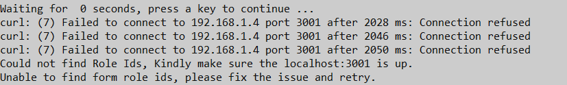
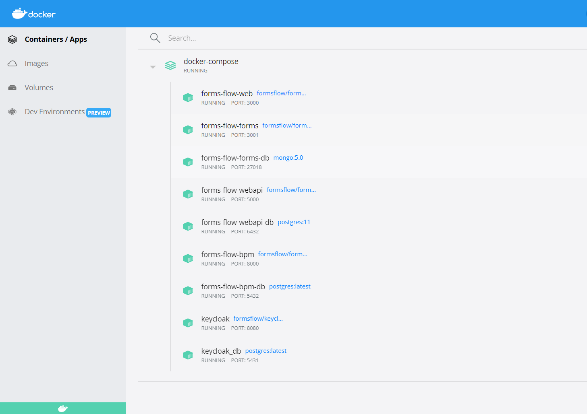

<article class="docs-article" id="section-1">
    <section class="docs-section" id="installation-1">

            <h1 class="docs-heading">Quick Installation</h1>
            <hr>
            <p>For fresh installations, we recommend you refer to this article for a quick installation.
                This article steps through how to install and configure the forms flow by using easy
                install. Easy installation saves time and labor and is less error-prone than manual
                installation. It helps you set up a running environment of the forms flow by installing
                the necessary packages and customizing the configuration files automatically.</p><br>
            <p>For Docker based single click installation follow the below instructions.</p>
            <div>


                <ol>
                    <li>Download the bundle.zip file from the path <a href="https://github.com/AOT-Technologies/forms-flow-ai/blob/develop/deployment/docker/bundle/bundle.zip">deployment/docker/bundle</a> and extract it wherever you want.</li>
                    <br>
                    </img><br>
                    <li>After extracting you will get the following files.</li><br>
                    </img><br>
                    <li>Here install.bat/bash are the installation files for windows and linux. The
                        docker-compose file and the newly creating env files can be
                        seen inside the configuration folder.</li>
                    <li>While you start the installation, you can see the following general questions
                        that is been asked,</li>
                    <br>
                    <pre>
                           <code>
Do you want analytics to include in the installation? [y/n]
Do you have an existing keycloak?[y/n]?
                            </code>
                       </pre><br>
                    <li>If you need to add analytics in the installation, you can give “y” or else “n”.
                    </li>
                    <li> You can give N if you do not have a default keycloak, the system will defaultly
                        install keycloak for you.After the keycloak gets up in the docker you have to
                        provide the client secret key from the keycloak browser.<br><br>
                        <pre>
                            <code>
What is your [Keycloak] forms-flow-bpm client secret key?
                            </code>
                        </pre>
                        </img> <br>
                        Also, if you already have a keycloak in your docker, then you have to give
                        certain details like,
                    </li>
                    <span>
                        <ul style="background-color: rgb(174, 173, 173)">
                            <li>Keycloak url</li>
                            <li>Keycloak Realm name</li>
                            <li>Keycloak admin user name</li>
                            <li>Keycloak admin password</li>
                            <li>Forms-flow-bpm client secret key</li><br>


                        </ul>
                        <li>After each component gets up in the docker, You can see the statement “done”
                            in the command prompt.</li>
                        <br>
                        </img><br><br>
                        <li>After the analytics get up (if you had chosen analytics), then it asks you
                            the redash api key.</li>
                        <br>
                        <pre>
                           <code>
What is your Redash API key?
                           </code>
                       </pre>
                        </img><br>
                        <li>. After the forms-flow-forms get up in the docker, it takes some time to
                            generate role id’s. So it checks with the system and find if it is able to
                            access the port and generate role id’s.</li><br>
                        </img><br><br>
                        <li>Then all other components get up in the docker.</li>
                        <br></img><br><br>
                        <li>As long as the role id’s is not generated it shows the error message “curl
                            error” and try to start up the next attempt, so just wait for the system to
                            confirm.</li><br><br>
                        </img><br><br>
                        <li>If everything gets up in the docker the system shows the completion message.
                        </li><br>
                        <pre>
                           <code>
********************** formsflow.ai is successfully installed ****************************
Press any key to continue . . .
                           
                           </code>
                       </pre>
                </ol>


            </div>
        
        </section>
        </article>